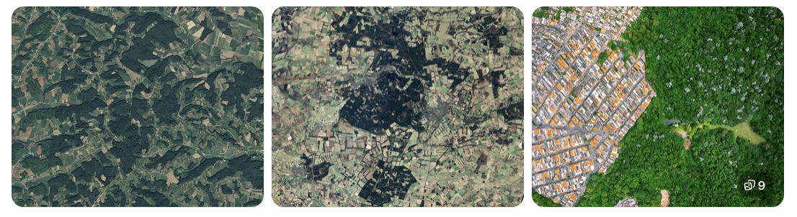
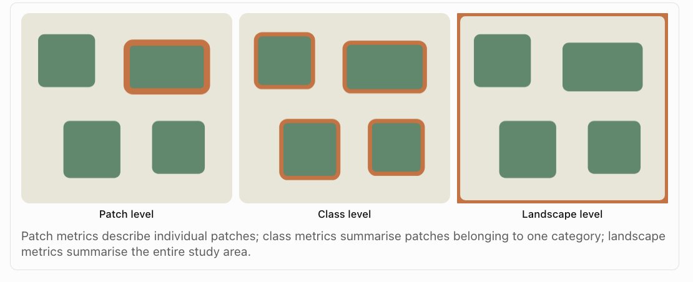

Homework 4
Aim
Welcome to Homework 4. Overall each lab is worth 4.8% and you can drop your lowest score. This is due the night before your next lab. The maximum time it should take is lab time plus about 2-3 hrs of your time.
0.1.5 Need help?
REMEMBER THAT EVERY TIME YOU RE-OPEN R-STUDIO YOU NEED TO RE-RUN ALL YOUR CODE CHUNKS. The easiest way to do this is to press the “Run All” button, in the “Run” menu at the top right of your screen
PART 1: LAB SET-UP
STEP 1: Create your project & download data/reports
- [1A] If you don’t already have a folder on your computer for Homework/Lab 4, make one inside your GEOG364 folder.
- [1B] Go to Canvas and download both the data and the lab report template. Put them in your HW4 folder and rename the lab template to include your email ID.
- [1C] Open R-Studio and make a project for Homework 4 in the existing HW4 folder (Project Tutorial here)
- [1D] Go to the files quadrant/tab and open the RmD Lab report. If you are running your project it should be right there. If it’s not, ask a teacher/TA.
-
[1E] Optional. You are welcome and encouraged to change the YAML code or use different themes.
- (Changing the theme to be personal to you does make grading easier! You can see them here - https://github.com/juba/rmdformats). Note, unlike last week, we are using the rmdformats package which allows you to make quick professional themes, I still tend to copy/paste.
STEP 2: Adjust your knit options
Look at the first code chunk below the YAML code. The knitr::opts_chunk$set(echo = TRUE) command is from the knitr package and allows us to set general options for the entire report.
- [2A] Add in two more options, warning=FALSE and message=FALSE as shown below.
- knitr::opts_chunk$set(echo = TRUE, warning=FALSE, message=FALSE)
STEP 3: Knit and check libraries
-
[3A] Press save and try to knit. If any packages are missing you will see
- EITHER a little yellow bar at the top of the screen asking if you want to install the libraries. Say yes, wait until the libraries are installed and try again.
- OR an error saying that it can’t find that library (it might also be a spelling mistake if you are sure it’s installed). In this case, you have to go to the app store and download it (Packages/Install) - see tutorial on left.
- EITHER a little yellow bar at the top of the screen asking if you want to install the libraries. Say yes, wait until the libraries are installed and try again.
PART 2: IN-CLASS EMERGENT PHENOMENA
You are allowed and encouraged to work in groups for this section
PART 3: DEFORESTATION & FRAGMENTATION BACKGROUND
STEP 6: Read the text in this section!
In this week’s lectures, we explored how different geographical processes can produce different spatial patterns. We also discussed why some patterns are much more complicated than others, and how fractal geometry can help us describe this complexity.
In this lab, we will investigate the spatial structure of landscapes using R. We will start with a real land-cover dataset, calculate statistics that describe its spatial pattern, and then experiment with how changing the arrangement of land-cover cells changes those statistics.
0.1.5.1 A. Background: Why do landscape patterns matter?

Figure 0.9: Different forestscapes
Imagine two regions, each containing 40% forest. In the first region, almost all the forest is contained within one large, continuous area. In the second, the forest is divided into hundreds of small patches surrounded by agricultural land. Although the two regions contain the same amount of forest, their spatial patterns are very different.
This distinction is important for understanding biodiversity, wildlife movement, forest management, wildfire risk and habitat fragmentation.
Geographers commonly distinguish between two characteristics of landscapes:
Composition: What is present in the landscape, and in what proportions?
Configuration: How are those features arranged spatially?
0.1.5.2 B Deforestation in the Brazilian Amazon
The Amazon rainforest is one of the largest remaining areas of tropical forest in the world. It plays an important role in global biodiversity, carbon storage and regional climate processes. However, substantial areas of the Brazilian Amazon have been converted to other land uses, particularly agriculture and pasture. Deforestation is not distributed randomly across the landscape. Clearing often follows roads, settlements and areas where agricultural expansion is economically attractive. This can produce distinctive spatial patterns,
0.1.5.3 C. Forest loss versus forest fragmentation
Forest loss and forest fragmentation are related, but they are not the same thing.
Forest loss refers to a reduction in the total area occupied by forest.
Forest fragmentation refers to changes in the spatial arrangement of forest, particularly the division of larger continuous areas into smaller or more separated patches.
This impacts
Habitat connectivity: A continuous forest may allow organisms to move through a landscape more easily than a collection of isolated patches. However, connectivity also depends on the species and its ability to move through non-forest areas.
Edge effects: Conditions near the boundary between forest and non-forest may differ from conditions within the forest interior. Forest edges can experience different temperatures, humidity, wind exposure and ecological interactions.
Patch size: Larger patches may contain more interior habitat, while smaller patches may have a greater proportion of their area near an edge.
0.1.6 B Measuring patch/class/landscape patterns

Figure 0.10: Three scales of analysis
WHAT IS A PATCH? A patch is a contiguous area belonging to the same land-cover class. For example, a continuous area of forest surrounded by grassland forms a forest patch.We can describe a landscape using statistics calculated at three different levels.
Patch-level metrics. Patch level metrics are metrics that describe properties of each individual patch. If you run a patch-level metric you will get as many lines of output as there are patches on the map.
Class-level metrics. Class level metrics are metrics that describe patterns at each class (class= landcover type). For example, in a simple map that shows forest, agriculture and urban pixels, a class level metric might describe average patch size for each of those 3 classes. If you run a class-level metric, you will get as many lines of output as there are classes on the map.
Landscape-level metrics. Landscape metrics are numerical measurements used to describe the composition and spatial configuration of an entire landscape. If you run a landscape-level metric you get one line of output. See below for more!
0.1.6.1 Landscape level metrics
We can distinguish between two broad types of information.
Composition describes what the landscape contains, such as the percentage occupied by forest.
Configuration describes how those land-cover classes are arranged, including the number, size and boundaries of forest patches.
In this lab, we will calculate four metrics: Each metric describes a different aspect of the landscape. None provides a complete description by itself.
| Metric | What it measures | Units |
|---|---|---|
| Percentage of landscape (PLAND) | Percentage of the landscape occupied by forest | % |
| Number of patches (NP) | Number of separate forest patches | Count |
| Mean patch area (AREA_MN) | Average area of forest patches | Hectares |
| Edge density (ED) | Length of forest edge relative to landscape area | Metres per hectare |
PART 4: DEFORESTATION & FRAGMENTATION EXAMPLE
STEP 7: Read about the dataset and study area
We will examine an area around Novo Progresso, in the Brazilian state of Pará. The dataset is derived from the MapBiomas Brazil annual land-cover classification. MapBiomas uses satellite imagery and classification methods to map land cover across Brazil.
For this exercise, the original land-cover categories have been simplified into two classes:
| Value | Classification | Colour |
|---|---|---|
| 0 | Non-forest | Light grey |
| 1 | Forest | Dark green |
In this dataset, forest refers specifically to the MapBiomas class Forest Formation (code 3). Other MapBiomas vegetation classes are included in the non-forest category. Therefore, our results describe changes in Forest Formation, rather than every type of tree-covered land.
The raster contains three layers representing 1985, 2005 and 2025.
Each cell measures 30 m × 30 m, so one cell represents 900 m², or 0.09 hectares.
The data have been projected into WGS 84 / UTM zone 21S (EPSG:32721), allowing us to calculate distances and areas in metres.
STEP 8: Load the data into R
- [8A] Make sure the novo_progresso_forest_1985_2025.tif file is in your Lab4 folder. In your lab report, make a new code chunk then read it in using the tif command,
forest <- rast("novo_progresso_forest_1985_2025.tif")-
[8B] Explore the dataset. As you can see this is a raster! You can type its name in a code chunk to see the overall summary
- A
SpatRastercan contain several layers. Here, each layer represents the same geographic area at a different point in time. - Inspect the dataset using commands like
- A
names(forest)
nlyr(forest)
crs(forest, describe = TRUE)
res(forest)-
[8C] In your lab report, write up these three questions
- How many raster layers are in the dataset, and what does each one represent?
- What is the spatial resolution of the raster?
- Why is it useful to have the raster in a “projected coordinate system” when calculating landscape metrics? (we’re using UTM)
STEP 9: Plot the forest maps
We will plot the three years using the same colours, so that forest and non-forest are represented consistently. Rather than using tmap, for rasters, just the plot command can give some nice output.
- [9A] Get this command running,
plot(
forest,
col = c("grey90", "darkgreen"),
breaks = c(-0.5, 0.5, 1.5),
main = names(forest),
nc = 3)-
[9B] In your lab report, write up these questions
- Describe the spatial distribution of forest in 1985.
- How does the arrangement of the remaining forest in 2025 differ from 1985?
- is this “fishbone clearing” or “geometric clearing” try googling both of these!
- What geographical processes might help explain the shapes of the cleared areas? What additional data would you need to investigate those explanations?
-
[9B] Before calculating any statistics, use the maps to predict how the four landscape metrics may have changed in your lab report (e.g. increase/decrease/uncertain and why)
- Forest cover (%)
- Number of forest patches
- Mean forest patch area
- Forest edge density
- [9C] In your lab report, explain which metric do you think will be the most useful for describing the process and pattern in your study area, and why